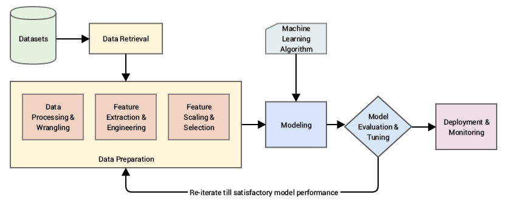
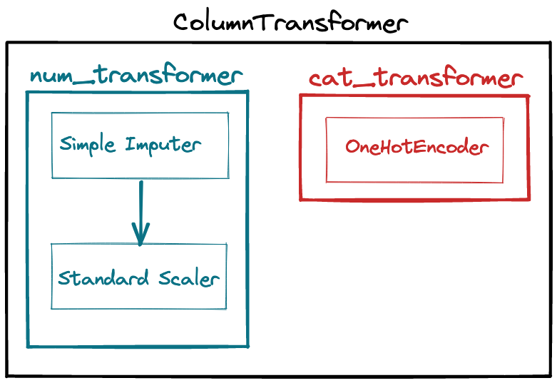
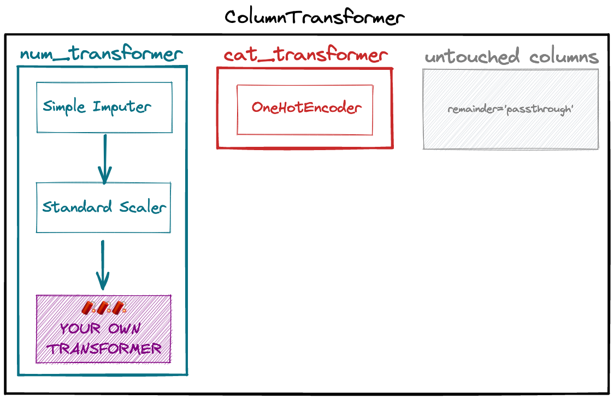
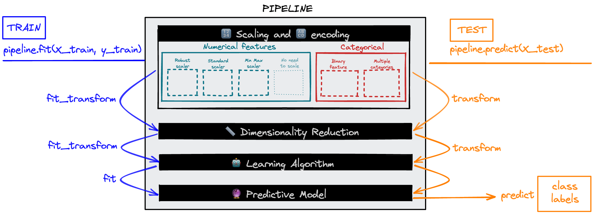
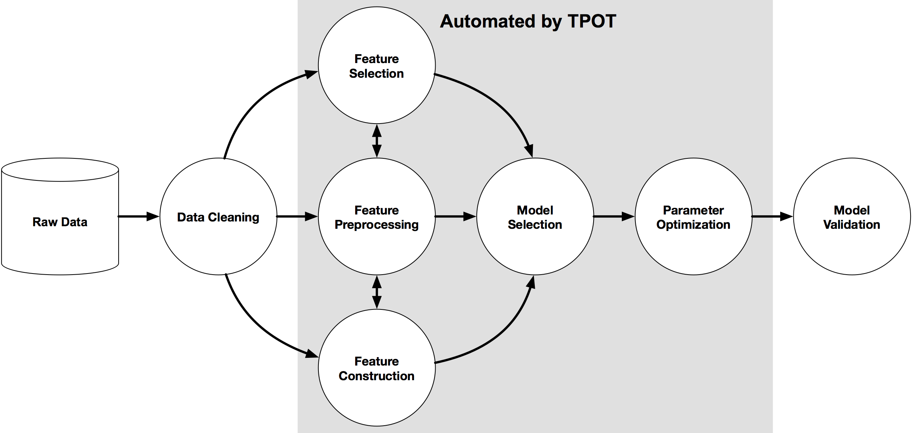

ML Workflow
Structurer un projet ML complet avec les Pipelines sklearn : chaîner les étapes de preprocessing et de modélisation, gérer les colonnes hétérogènes, créer des features custom, tuner l'ensemble en une seule passe, et exporter le pipeline final.
- Cheatsheet — ML Workflow & Pipelines
- Pipeline séquentiel (→ → →)
- ColumnTransformer (⑂ — traitements parallèles par colonne)
- make_* shortcuts ⚡️
- FunctionTransformer — transformer custom stateless
- Custom Transformer stateful (classe Python)
- FeatureUnion (|| — concatène des branches parallèles)
- Pipeline complet avec modèle
- Cross-validation et GridSearchCV sur Pipeline
- Export et rechargement
- Debug et cache
- ️ Récapitulatif — Erreurs clés à éviter
- 1) Sélection du modèle
- 2) Pipelines sklearn
- 3) Pipelines de preprocessing
- 4) Pipeline complet avec modèle
- 5) AutoML — TPOT
- 6) Récapitulatif — Composants sklearn
- Ressources
Structurer un projet ML complet avec les Pipelines sklearn : chaîner les étapes de preprocessing et de modélisation, gérer les colonnes hétérogènes, créer des features custom, tuner l'ensemble en une seule passe, et exporter le pipeline final.
📋 Cheatsheet — ML Workflow & Pipelines
Pipeline séquentiel (→ → →)
from sklearn.pipeline import Pipeline
from sklearn.impute import SimpleImputer
from sklearn.preprocessing import StandardScaler
## Chaîne d'étapes appliquées en séquence
pipeline = Pipeline([
('imputer', SimpleImputer(strategy="median")), # étape 1 : imputation
('scaler', StandardScaler()) # étape 2 : scaling
])
pipeline.fit(X_train[['age']]) # apprend median et std sur le train
pipeline.transform(X_train[['age']]) # applique imputation puis scalingColumnTransformer (⑂ — traitements parallèles par colonne)
from sklearn.compose import ColumnTransformer
from sklearn.preprocessing import OneHotEncoder
num_transformer = Pipeline([
('imputer', SimpleImputer(strategy="mean")), # impute les NaN numériques
('scaler', StandardScaler()) # standardise
])
cat_transformer = OneHotEncoder(handle_unknown='ignore') # encode les catégories
preprocessor = ColumnTransformer([
('num', num_transformer, ['age', 'bmi']), # num → pipeline séquentiel
('cat', cat_transformer, ['smoker', 'region']) # cat → OHE
], remainder='passthrough') # 'passthrough' conserve les autres colonnes non transformées
X_train_transformed = preprocessor.fit_transform(X_train) # fit + transform en une passe
preprocessor.get_feature_names_out() # noms des colonnes après transformationmake_* shortcuts ⚡️
from sklearn.pipeline import make_pipeline, make_union
from sklearn.compose import make_column_transformer, make_column_selector
## Équivalent Pipeline([...]) sans nommer les étapes
num_transformer = make_pipeline(SimpleImputer(), StandardScaler())
## Sélection automatique des colonnes par dtype
num_col = make_column_selector(dtype_include=['float64']) # colonnes numériques
cat_col = make_column_selector(dtype_include=['object', 'bool']) # colonnes catégorielles
preproc = make_column_transformer(
(num_transformer, num_col),
(OneHotEncoder(), cat_col),
remainder='passthrough'
)FunctionTransformer — transformer custom stateless
from sklearn.preprocessing import FunctionTransformer
import numpy as np
## Encapsule une fonction Python dans un transformer sklearn
rounder = FunctionTransformer(lambda arr: np.round(arr, decimals=2)) # arrondi à 2 décimales
log_transformer = FunctionTransformer(np.log1p) # log(1 + x)
## Compatible Pipeline et ColumnTransformer
num_transformer = make_pipeline(SimpleImputer(), StandardScaler(), rounder)Custom Transformer stateful (classe Python)
from sklearn.base import TransformerMixin, BaseEstimator
class MyCustomTransformer(TransformerMixin, BaseEstimator):
# BaseEstimator → fournit get_params() et set_params() nécessaires aux Pipelines
# TransformerMixin → génère fit_transform() depuis fit() et transform()
def __init__(self):
pass
def fit(self, X, y=None):
# Stocker ce qui est "appris" sur X_train (ex: self.mean_ = X.mean())
return self # retourner self pour permettre le chaînage .fit().transform()
def transform(self, X, y=None):
# Appliquer la transformation et retourner un DataFrame
return XFeatureUnion (|| — concatène des branches parallèles)
from sklearn.pipeline import FeatureUnion
## Crée une nouvelle feature et la concatène au preprocessing existant
bmi_age_ratio = FunctionTransformer(lambda df: pd.DataFrame(df['bmi'] / df['age']))
union = FeatureUnion([
('preprocess', preprocessor), # colonnes 0-7 (preprocessing standard)
('bmi_age_ratio', bmi_age_ratio) # colonne 8 (nouvelle feature créée)
])
X_transformed = union.fit_transform(X_train) # shape = (n, 9)Pipeline complet avec modèle
from sklearn.linear_model import Ridge
pipeline = make_pipeline(preproc, Ridge()) # preprocessor + modèle en 1 objet
pipeline.fit(X_train, y_train) # fit tout le pipeline d'un coup
pipeline.predict(X_test) # transform + predict automatiquement
pipeline.score(X_test, y_test) # → 0.747Cross-validation et GridSearchCV sur Pipeline
from sklearn.model_selection import cross_val_score, GridSearchCV
## Cross-validation sur le pipeline entier (pas de leakage !)
cross_val_score(pipeline, X_train, y_train, cv=5, scoring='r2').mean() # → 0.743
## Accéder aux hyperparamètres : syntaxe step__transformer__param
pipeline.get_params() # affiche tous les hyperparamètres accessibles
grid_search = GridSearchCV(
pipeline,
param_grid={
'columntransformer__pipeline__simpleimputer__strategy': ['mean', 'median'],
'ridge__alpha': [0.1, 0.5, 1, 5, 10]
},
cv=5, scoring='r2'
)
grid_search.fit(X_train, y_train)
grid_search.best_params_ # → {'...strategy': 'mean', 'ridge__alpha': 1}
pipeline_tuned = grid_search.best_estimator_ # meilleur pipeline prêt à l'emploiExport et rechargement
import pickle
## Exporter le pipeline en fichier pickle
with open("pipeline.pkl", "wb") as f:
pickle.dump(pipeline_tuned, f)
## Recharger et utiliser sans ré-entraîner
pipeline_loaded = pickle.load(open("pipeline.pkl", "rb"))
pipeline_loaded.score(X_test, y_test) # → 0.747Debug et cache
## Inspecter les étapes du pipeline
pipeline_tuned.named_steps.keys() # dict_keys(['columntransformer', 'ridge'])
## Vérifier le shape après preprocessing
pipeline_tuned.named_steps['columntransformer'].fit_transform(X_train).shape # (1070, 9)
## Cache pour éviter de recalculer le preprocessing en GridSearch
from tempfile import mkdtemp
from shutil import rmtree
cachedir = mkdtemp()
pipeline = Pipeline(steps, memory=cachedir) # preprocessing mis en cache
rmtree(cachedir) # nettoyer après usage⚠️ Récapitulatif — Erreurs clés à éviter
Fitter le preprocessor sur tout le dataset avant le Pipeline
❌ preprocessor.fit_transform(X) puis cross_val_score(model, X_transformed, y) → data leakage : le scaler "a vu" les données de validation
✅ Mettre le preprocessor dans le Pipeline, passer pipeline à cross_val_score → le fit du scaler se fait uniquement sur chaque fold de train
Utiliser FunctionTransformer pour une transformation stateful
❌ FunctionTransformer(lambda X: (X - X.mean()) / X.std()) → la moyenne et std sont recalculées à chaque appel .transform(), y compris sur le test
✅ Créer une classe héritant de TransformerMixin + BaseEstimator qui stocke self.mean_ et self.std_ dans .fit() et les réutilise dans .transform()
Oublier remainder='passthrough' et perdre des colonnes
❌ ColumnTransformer([...]) sans remainder → les colonnes non listées sont supprimées silencieusement du dataset transformé
✅ Ajouter remainder='passthrough' pour conserver les colonnes non transformées
Utiliser la mauvaise syntaxe pour GridSearch sur un Pipeline
❌ param_grid={'alpha': [0.1, 1]} → sklearn ne trouve pas le paramètre dans le pipeline et lève une erreur
✅ Syntaxe correcte : 'nom_étape__nom_transformer__paramètre' ex: 'ridge__alpha' ou 'columntransformer__pipeline__simpleimputer__strategy'
Refitter le pipeline exporté sur de nouvelles données
❌ pipeline_loaded.fit(X_new, y_new) avant de prédire → écrase les paramètres appris sur le train set original
✅ pipeline_loaded.predict(X_new) directement : le pipeline chargé applique les transformations apprises sans refitting
1) Sélection du modèle
1.1 Modèles paramétriques vs non-paramétriques
| Modèles paramétriques | Modèles non-paramétriques | |
|---|---|---|
| Exemples | Régression linéaire, Logistique, Réseaux de neurones | KNN, SVM-kernel, Arbres |
| Principe | $\hat{y} = f_\beta(X)$ — nb. de paramètres fixe | Pas d'hypothèse sur la structure des données |
| Avantages | Rapides à entraîner, scalables (SGD) | Capturent des patterns complexes |
| Inconvénients | Hypothèses a priori sur la structure | Difficiles à entraîner sur grands datasets, sujets à l'overfitting |

2) Pipelines sklearn

Un Pipeline est une chaîne d'opérations ML (preprocessing, entraînement, prédiction…).
Avantages :
- 🏄 Workflow lisible et structuré
- 💪 Ordre des étapes garanti
- ⚙️ Reproductible et déployable
- 🛡️ Prévient le data leakage en cross-validation

👉 sklearn — Pipeline and composite estimators
3) Pipelines de preprocessing
Dataset utilisé : assurance santé (charges ~ age, bmi, children, smoker, region)
X = data.drop(columns='charges')
y = data['charges']
X_train, X_test, y_train, y_test = train_test_split(X, y, test_size=0.20)
## X_train.shape = (1070, 5), X_test.shape = (268, 5)3.1 Pipeline → → → (séquentiel)
Un Pipeline chaîne plusieurs étapes en séquence — chaque étape reçoit l'output de la précédente.
from sklearn.pipeline import Pipeline
from sklearn.impute import SimpleImputer
from sklearn.preprocessing import StandardScaler
## Imputer puis scaler la feature 'age'
pipeline = Pipeline([
('imputer', SimpleImputer(strategy="median")), # remplace NaN par la médiane
('scaler', StandardScaler()) # standardise (µ=0, σ=1)
])
pipeline.fit(X_train[['age']]) # apprend médiane + µ/σ sur le train
pipeline.transform(X_train[['age']]) # applique les deux transformations3.2 ColumnTransformer ⑂ (traitements parallèles par colonne)
Un ColumnTransformer applique des transformations différentes à des colonnes différentes en parallèle.
👉 sklearn.compose.ColumnTransformer

from sklearn.compose import ColumnTransformer
from sklearn.preprocessing import OneHotEncoder
## Transformer pour colonnes numériques : impute puis scale
num_transformer = Pipeline([
('imputer', SimpleImputer(strategy="mean")), # remplace NaN par la moyenne
('scaler', StandardScaler()) # standardise
])
## Transformer pour colonnes catégorielles : encode
cat_transformer = OneHotEncoder(handle_unknown='ignore') # ignore les catégories inconnues au test
preprocessor = ColumnTransformer([
('num', num_transformer, ['age', 'bmi']), # applique num_transformer à age et bmi
('cat', cat_transformer, ['smoker', 'region']) # applique OHE à smoker et region
], remainder='passthrough') # conserve 'children' sans transformationRécupérer les noms des colonnes après transformation :
preprocessor.fit_transform(X_train) # shape (1070, 8) sans children
preprocessor.get_feature_names_out()
## → ['num__age', 'num__bmi', 'cat__smoker_False', 'cat__smoker_True',
## 'cat__region_northeast', 'cat__region_northwest', ...]remainder='passthrough' : conserve les colonnes non listées (ici children). Sans cette option, elles sont supprimées silencieusement.
3.3 FunctionTransformer → (transformer custom stateless)
Encapsule une fonction Python dans un transformer sklearn compatible Pipeline / ColumnTransformer.
👉 sklearn.preprocessing.FunctionTransformer

from sklearn.preprocessing import FunctionTransformer
import numpy as np
## Arrondi à 2 décimales (stateless : ne "apprend" rien)
rounder = FunctionTransformer(lambda arr: np.round(arr, decimals=2))
## Intégration dans le pipeline numérique
num_transformer = Pipeline([
('imputer', SimpleImputer()),
('scaler', StandardScaler()),
('rounder', rounder) # arrondi après scaling
])FunctionTransformer ne fonctionne que pour les transformations stateless (sans mémoire entre fit et transform). Pour des transformations qui "apprennent" quelque chose sur le train (comme StandardScaler), il faut créer une classe custom.
Transformations stateless vs stateful :
| Stateless | Stateful | |
|---|---|---|
| Définition | Ne stocke rien pendant .fit() | Stocke des constantes pendant .fit() |
| Exemples | log(X), X₁ + 5·X₂, arrondi | StandardScaler (apprend µ, σ), MinMaxScaler (apprend min, max) |
| Outil sklearn | FunctionTransformer | Classe héritant de TransformerMixin • BaseEstimator |
3.4 Custom Transformer stateful (classe Python)
Pour les transformations qui doivent mémoriser des valeurs sur le train set :
from sklearn.base import TransformerMixin, BaseEstimator
class MyCustomTransformer(TransformerMixin, BaseEstimator):
# BaseEstimator → fournit get_params() / set_params() requis par les Pipelines
# TransformerMixin → génère fit_transform() automatiquement depuis fit() + transform()
def __init__(self):
pass
def fit(self, X, y=None):
# Apprendre et stocker les constantes en attributs d'instance
# ex: self.mean_ = X.mean()
return self # retourner self pour le chaînage .fit().transform()
def transform(self, X, y=None):
# Appliquer la transformation en utilisant les attributs stockés
# Retourner un DataFrame pour compatibilité ColumnTransformer
return X
## Usage
my_transformer = MyCustomTransformer()
my_transformer.fit(X_train) # apprend sur le train
my_transformer.transform(X_train) # transforme le train
my_transformer.transform(X_test) # transforme le test avec les constantes du train3.5 FeatureUnion || (concaténation de branches parallèles)
FeatureUnion applique des transformateurs en parallèle et concatène les résultats — utile pour créer de nouvelles features.
👉 sklearn.pipeline.FeatureUnion
from sklearn.pipeline import FeatureUnion
## Créer une nouvelle feature : ratio bmi/age
bmi_age_ratio = FunctionTransformer(
lambda df: pd.DataFrame(df['bmi'] / df['age']) # retourne une nouvelle colonne
)
## Concaténer le preprocessing existant avec la nouvelle feature
union = FeatureUnion([
('preprocess', preprocessor), # colonnes 0-7 (résultat du ColumnTransformer)
('bmi_age_ratio', bmi_age_ratio) # colonne 8 (nouvelle feature)
])
pd.DataFrame(union.fit_transform(X_train)).head(1)
## shape = (1070, 9) : 8 colonnes preprocessées + 1 nouvelle feature3.6 Shortcuts make_* ⚡️
from sklearn.pipeline import make_pipeline, make_union
from sklearn.compose import make_column_transformer, make_column_selector
## make_pipeline : pas besoin de nommer les étapes
num_transformer = make_pipeline(SimpleImputer(), StandardScaler())
## make_column_selector : sélection automatique par dtype
num_col = make_column_selector(dtype_include=['float64']) # age, bmi
cat_col = make_column_selector(dtype_include=['object', 'bool']) # region, smoker
## Pipeline de preprocessing complet
preproc = make_column_transformer(
(num_transformer, num_col), # scale les float
(OneHotEncoder(), cat_col), # encode les catégories
remainder='passthrough' # conserve children
)
## Ajouter une feature créée
preproc_full = make_union(preproc, bmi_age_ratio)4) Pipeline complet avec modèle
Un modèle sklearn peut être ajouté en dernière étape du Pipeline — le pipeline hérite alors des méthodes du modèle (.predict(), .score()).

from sklearn.linear_model import Ridge
## Preprocessor + modèle en un seul objet
pipeline = make_pipeline(preproc, Ridge())
## .fit() : appelle fit_transform() sur le preprocessor puis fit() sur Ridge
pipeline.fit(X_train, y_train)
## .predict() : appelle transform() sur le preprocessor puis predict() sur Ridge
pipeline.predict(X_test.iloc[0:1]) # → array([10216.57])
## .score() : score du modèle sur les données transformées
pipeline.score(X_test, y_test) # → 0.7474.1 Cross-validation sans data leakage
from sklearn.model_selection import cross_val_score
## Le Pipeline garantit que le fit du preprocessor se fait uniquement sur le fold de train
cross_val_score(pipeline, X_train, y_train, cv=5, scoring='r2').mean() # → 0.7434.2 GridSearchCV sur le Pipeline
La syntaxe pour accéder aux hyperparamètres d'un Pipeline est étape__sous_étape__paramètre.
from sklearn.model_selection import GridSearchCV
## Voir tous les hyperparamètres accessibles
pipeline.get_params()
## Grid Search sur le preprocessing ET le modèle simultanément
grid_search = GridSearchCV(
pipeline,
param_grid={
# Hyperparamètre du SimpleImputer dans le ColumnTransformer
'columntransformer__pipeline__simpleimputer__strategy': ['mean', 'median'],
# Hyperparamètre du modèle Ridge
'ridge__alpha': [0.1, 0.5, 1, 5, 10]
},
cv=5,
scoring='r2'
)
grid_search.fit(X_train, y_train)
grid_search.best_params_ # → {'...strategy': 'mean', 'ridge__alpha': 1}
## Meilleur pipeline, déjà entraîné
pipeline_tuned = grid_search.best_estimator_
pipeline_tuned.predict(X_test[0:1]) # → array([10216.57])4.3 Debug du Pipeline
## Lister les étapes nommées du pipeline
pipeline_tuned.named_steps.keys() # → dict_keys(['columntransformer', 'ridge'])
## Vérifier le shape à une étape intermédiaire
print(X_train.shape) # (1070, 5) avant preprocessing
pipeline_tuned.named_steps['columntransformer'].fit_transform(X_train).shape # (1070, 9) après4.4 Cache pour accélérer le GridSearch
Utile quand le preprocessing est long et que seul le modèle change entre les combinaisons.
from tempfile import mkdtemp
from shutil import rmtree
cachedir = mkdtemp() # répertoire temporaire pour le cache
pipeline = Pipeline(steps, memory=cachedir) # preprocessing mis en cache après le 1er fit
## ... GridSearchCV ici, le preprocessing ne sera calculé qu'une fois ...
rmtree(cachedir) # nettoyer le cache après usage4.5 Export du Pipeline (pickle)
import pickle
## Sauvegarder le pipeline entraîné
with open("pipeline.pkl", "wb") as f:
pickle.dump(pipeline_tuned, f)
## Recharger sans ré-entraîner
pipeline_loaded = pickle.load(open("pipeline.pkl", "rb"))
pipeline_loaded.score(X_test, y_test) # → 0.747Le fichier pickle peut être déployé sur un serveur (voir le module ML Ops) pour faire des prédictions en production sans ré-entraîner le modèle.
5) AutoML — TPOT
TPOT (Tree-based Pipeline Optimization Tool) explore et optimise automatiquement les pipelines ML via des algorithmes évolutionnaires.

pip install TPOTfrom tpot import TPOTRegressor
## Preprocessing manuel nécessaire avant TPOT
X_train_preproc = preproc.fit_transform(X_train)
X_test_preproc = preproc.transform(X_test)
## Lancer l'AutoML
tpot = TPOTRegressor(
generations=4, # nombre de générations évolutionnaires
population_size=20, # taille de la population de pipelines
scoring='r2',
n_jobs=-1,
cv=2
)
tpot.fit(X_train_preproc, y_train)
tpot.score(X_test_preproc, y_test) # → 0.873## Exporter le meilleur pipeline en fichier Python
tpot.export('tpot_best_pipeline.py')6) Récapitulatif — Composants sklearn
| Composant | Rôle | Symbole |
|---|---|---|
Pipeline | Chaîne d'étapes séquentielles | → → → |
ColumnTransformer | Étapes parallèles par colonnes | ⑂ |
FunctionTransformer | Encapsule une fonction stateless | → |
FeatureUnion | Branches parallèles concaténées | \ |
make_pipeline | Shortcut Pipeline sans nommage | ⚡️ |
make_column_transformer | Shortcut ColumnTransformer | ⚡️ |
make_column_selector | Sélection auto par dtype | ⚡️ |
📚 Ressources
👉 sklearn — Pipeline and composite estimators
👉 sklearn.compose.ColumnTransformer
👉 sklearn.preprocessing.FunctionTransformer
👉 sklearn.pipeline.FeatureUnion
- 🧭 Introduction
- 1. Choisir son modèle : paramétrique vs non-paramétrique
- 2. Les Pipelines sklearn : c'est quoi exactement ?
- 3. Pipeline séquentiel : chaîner des étapes
- 4. ColumnTransformer : des traitements différents par colonne
- 5. FunctionTransformer : encapsuler une fonction Python
- 6. Custom Transformer stateful : créer sa propre classe
- 7. FeatureUnion : créer de nouvelles features et les fusionner
- 8. Raccourcis make_* : coder plus vite
- 9. Pipeline complet avec modèle
- 10. Cross-validation sans data leakage
- 11. GridSearchCV : tuner le pipeline entier
- 12. Débugger un Pipeline
- 13. Exporter et recharger un Pipeline (pickle)
- 14. AutoML avec TPOT (bonus)
- 15. Récapitulatif des composants sklearn
- 🎯 Questions de vérification
- 📌 TL;DR
🧭 Introduction
Quand on construit un modèle de machine learning, on ne fait pas juste "entraîner un algo". On suit un pipeline, c'est-à-dire une chaîne d'étapes ordonnées : préparer les données, entraîner le modèle, évaluer ses performances sur des données qu'il n'a jamais vues.
L'analogie fil rouge : une recette de cuisine
Imagine que tu cuisines un plat. Tu dois :
- Préparer les ingrédients (couper, éplucher, assaisonner) — c'est le preprocessing
- Cuisiner (cuire à la bonne température) — c'est l'entraînement du modèle
- Goûter et ajuster — c'est l'évaluation et le tuning
- Mettre en boîte pour livrer — c'est l'export du pipeline
En ML, sklearn te donne des outils pour automatiser tout ça en un seul objet appelé Pipeline.
5 points à retenir avant de commencer :
- Un pipeline ML enchaîne les étapes de preprocessing et de modélisation dans un seul objet
- On entraîne toujours sur
X_trainet on évalue surX_test— jamais on ne mélange les deux - Le data leakage (fuite de données) est l'erreur la plus fréquente : si le preprocessor "voit" les données de test pendant l'entraînement, les scores sont faussement bons
Pipelinede sklearn est le remède principal contre le data leakage- On peut tuner le preprocessing ET le modèle en une seule passe avec
GridSearchCV
Mini-plan du cours :
- Choisir un modèle : paramétrique vs non-paramétrique
- Construire un Pipeline séquentiel
- Gérer des colonnes hétérogènes avec
ColumnTransformer - Créer des transformations custom
- Assembler le Pipeline complet avec modèle
- Tuner, débugger, exporter
1. Choisir son modèle : paramétrique vs non-paramétrique
Avant même d'écrire du code, il faut choisir quel type de modèle utiliser. Il en existe deux grandes familles.
Les modèles paramétriques
Ce sont des modèles qui ont une forme fixée à l'avance. Leur formule mathématique ressemble à :
Où $\beta$ représente les paramètres que le modèle apprend (par exemple les coefficients d'une régression linéaire). Peu importe la taille du dataset, le nombre de paramètres reste le même.
Exemples : régression linéaire, régression logistique, réseaux de neurones
Analogie : c'est comme une balance à deux plateaux — on sait déjà que la structure est "plateau gauche vs plateau droit", on ajuste juste les poids.
Avantages : rapides à entraîner, fonctionnent bien sur de grands datasets
Inconvénients : si les données ne correspondent pas à la forme supposée, le modèle performe mal
Les modèles non-paramétriques
Ces modèles ne supposent aucune forme a priori. Ils s'adaptent à la structure des données.
Exemples : K-Nearest Neighbors (KNN), arbres de décision, SVM avec kernel
Analogie : c'est comme un sculpteur qui part d'un bloc et s'adapte à la matière — la forme finale dépend entièrement des données.
Avantages : capturent des patterns complexes et non linéaires
Inconvénients : plus lents, plus sujets à l'overfitting sur de grands datasets
| Paramétriques | Non-paramétriques | |
|---|---|---|
| Exemples | Régression linéaire, logistique | KNN, arbres de décision, SVM |
| Forme | Fixée ($\hat{y} = f_\beta(X)$) | Adaptée aux données |
| Avantages | Rapides, scalables | Capturent des patterns complexes |
| Inconvénients | Hypothèses a priori | Overfitting, lents sur grands datasets |
En pratique, on commence souvent par un modèle paramétrique simple (régression linéaire/logistique) pour établir une baseline, puis on essaie des modèles plus complexes.
2. Les Pipelines sklearn : c'est quoi exactement ?
Un Pipeline sklearn, c'est un objet qui regroupe plusieurs étapes de traitement dans une séquence. Au lieu d'appliquer manuellement chaque transformation puis d'entraîner le modèle, tu mets tout dans un pipeline et tu appelles .fit() une seule fois.
Pourquoi c'est utile ?
- Le code est lisible et organisé
- L'ordre des étapes est garanti (on ne peut pas oublier une étape)
- C'est facilement exportable et déployable
- Cela prévient le data leakage en cross-validation (point capital, expliqué plus bas)
Imagine un pipeline comme une chaîne de montage dans une usine. Chaque poste fait une opération précise, dans un ordre fixe. La voiture (tes données) passe de poste en poste et ressort transformée à la fin.
3. Pipeline séquentiel : chaîner des étapes
Le contexte : dataset assurance santé
On travaille sur un dataset de frais d'assurance santé. On veut prédire les charges (montant payé) à partir de variables comme l'âge, l'IMC, le nombre d'enfants, le statut fumeur, et la région.
# Séparation des features (X) et de la cible (y)
X = data.drop(columns='charges') # toutes les colonnes sauf charges
y = data['charges'] # la colonne à prédire
# Découpage train / test : 80% pour entraîner, 20% pour évaluer
X_train, X_test, y_train, y_test = train_test_split(X, y, test_size=0.20)
# X_train.shape = (1070, 5) → 1070 lignes, 5 colonnes
# X_test.shape = (268, 5) → 268 lignes, 5 colonnesExplication ligne par ligne :
drop(columns='charges'): on retire la colonne à prédire des featurestrain_test_split(..., test_size=0.20): 20 % des données sont mises de côté pour le test final — le modèle ne les verra jamais pendant l'entraînement
Construire un Pipeline séquentiel
Un Pipeline séquentiel enchaîne des transformations une à une. La sortie de l'étape 1 devient l'entrée de l'étape 2, etc.
Exemple : on veut imputer les valeurs manquantes de la colonne age, puis la standardiser.
from sklearn.pipeline import Pipeline # import du Pipeline
from sklearn.impute import SimpleImputer # pour gérer les valeurs manquantes
from sklearn.preprocessing import StandardScaler # pour standardiser
# Création du pipeline : liste de tuples (nom, transformateur)
pipeline = Pipeline([
('imputer', SimpleImputer(strategy="median")), # étape 1 : remplace NaN par la médiane
('scaler', StandardScaler()) # étape 2 : standardise (µ=0, écart-type=1)
])
# .fit() : le pipeline apprend la médiane ET les paramètres de scaling sur X_train
pipeline.fit(X_train[['age']])
# .transform() : applique l'imputation PUIS le scaling dans l'ordre
pipeline.transform(X_train[['age']])Récap : on crée un pipeline avec Pipeline([...]), chaque étape est un tuple ('nom', transformateur). On appelle .fit() pour apprendre, .transform() pour appliquer.
On appelle toujours .fit() uniquement sur X_train. Si on fitait sur tout le dataset (train + test), le modèle "tricherait" en connaissant les données de test à l'avance.
4. ColumnTransformer : des traitements différents par colonne
Dans la vraie vie, un dataset a plusieurs types de colonnes :
- Des colonnes numériques (age, bmi) → on impute et on standardise
- Des colonnes catégorielles (smoker, region) → on encode en one-hot
Le ColumnTransformer permet d'appliquer des transformations différentes à des colonnes différentes, en parallèle.
Analogie : c'est comme un tri postal. Les lettres (colonnes numériques) vont dans un couloir, les colis (colonnes catégorielles) dans un autre, et chaque couloir a son propre traitement.
from sklearn.compose import ColumnTransformer # pour le tri par colonnes
from sklearn.preprocessing import OneHotEncoder # pour encoder les catégories
# --- Transformer pour colonnes NUMERIQUES ---
num_transformer = Pipeline([
('imputer', SimpleImputer(strategy="mean")), # remplace NaN par la moyenne
('scaler', StandardScaler()) # centre et réduit (moyenne=0, écart-type=1)
])
# --- Transformer pour colonnes CATEGORIELLES ---
# handle_unknown='ignore' : si une catégorie inconnue apparaît au test, elle est ignorée
cat_transformer = OneHotEncoder(handle_unknown='ignore')
# --- Assemblage du ColumnTransformer ---
preprocessor = ColumnTransformer([
('num', num_transformer, ['age', 'bmi']), # applique num_transformer à age et bmi
('cat', cat_transformer, ['smoker', 'region']) # applique OHE à smoker et region
], remainder='passthrough') # conserve les colonnes non listées (ici : children) sans les toucher
# Application : fit + transform en une seule passe sur X_train
X_train_transformed = preprocessor.fit_transform(X_train)
# → shape (1070, 8) : age, bmi, smoker_False, smoker_True, region_ne, region_nw, region_se, region_sw
# Voir les noms des colonnes après transformation
preprocessor.get_feature_names_out()
# → ['num__age', 'num__bmi', 'cat__smoker_False', 'cat__smoker_True', ...]Récap : ColumnTransformer prend une liste de tuples (nom, transformateur, colonnes) et applique chaque transformateur à ses colonnes. La sortie est une matrice avec toutes les colonnes transformées concaténées.
Sans remainder='passthrough', toutes les colonnes non listées dans le ColumnTransformer sont supprimées silencieusement. C'est un piège classique ! Ici, la colonne children aurait disparu sans cette option.
Visualiser ce qui se passe
Avant transformation : 5 colonnes (age, bmi, children, smoker, region)
Après transformation :
age→ 1 colonne (standardisée)bmi→ 1 colonne (standardisée)smoker→ 2 colonnes (True/False encodé)region→ 4 colonnes (northeast, northwest, southeast, southwest)children→ 1 colonne (inchangée via passthrough)
Total : 9 colonnes en sortie
5. FunctionTransformer : encapsuler une fonction Python
Parfois on veut appliquer une transformation simple — comme prendre le logarithme d'une colonne — sans créer une classe entière. C'est le rôle de FunctionTransformer.
Exemple : les charges d'assurance ont une distribution très asymétrique. Appliquer $\log(1 + x)$ permet de la rendre plus symétrique et d'améliorer certains modèles.
from sklearn.preprocessing import FunctionTransformer # encapsule une fonction simple
import numpy as np
# Créer un transformer qui arrondit à 2 décimales
# lambda : une petite fonction anonyme Python
rounder = FunctionTransformer(lambda arr: np.round(arr, decimals=2))
# Créer un transformer qui applique log(1 + x)
# np.log1p(x) = log(1 + x) → évite log(0) quand x=0
log_transformer = FunctionTransformer(np.log1p)
# Intégration dans un pipeline numérique
num_transformer = Pipeline([
('imputer', SimpleImputer()), # remplace les NaN
('scaler', StandardScaler()), # standardise
('rounder', rounder) # arrondit à 2 décimales après scaling
])Récap : FunctionTransformer "enveloppe" une fonction Python classique pour la rendre compatible avec un pipeline sklearn. C'est pratique pour des transformations simples et sans mémoire.
Stateless vs Stateful : une distinction importante
| Stateless (sans mémoire) | Stateful (avec mémoire) | |
|---|---|---|
| Définition | Ne stocke rien pendant .fit() | Apprend et stocke des valeurs pendant .fit() |
| Exemples | log(x), arrondi, $x^2$ | StandardScaler (apprend $\mu$ et $\sigma$), MinMaxScaler |
| Outil sklearn | FunctionTransformer | Classe héritant de TransformerMixin + BaseEstimator |
Ne jamais utiliser FunctionTransformer pour une transformation stateful. Par exemple, FunctionTransformer(lambda X: (X - X.mean()) / X.std()) recalculerait la moyenne et l'écart-type à chaque appel — y compris sur les données de test — ce qui est du data leakage !
6. Custom Transformer stateful : créer sa propre classe
Quand une transformation doit apprendre quelque chose sur le train set et réutiliser ces valeurs appris sur le test set, il faut créer une classe Python.
Exemple concret : imaginons qu'on veuille créer un transformateur qui apprend la médiane de chaque colonne sur le train, puis remplace les valeurs aberrantes par cette médiane sur le test.
from sklearn.base import TransformerMixin, BaseEstimator
# TransformerMixin : donne la méthode fit_transform() automatiquement
# BaseEstimator : donne get_params() et set_params() requis par sklearn
class MyCustomTransformer(TransformerMixin, BaseEstimator):
def __init__(self):
# Ici : paramètres de configuration (hyperparamètres)
# Exemple : self.threshold = threshold
pass
def fit(self, X, y=None):
# Ici : on "apprend" sur X_train et on stocke les résultats en attributs
# Exemple : self.median_ = X.median()
# Le underscore final (_) est une convention sklearn pour les attributs appris
return self # OBLIGATOIRE : retourner self pour permettre le chaînage
def transform(self, X, y=None):
# Ici : on applique la transformation en utilisant les attributs stockés dans fit()
# Exemple : remplacer valeurs > seuil par self.median_
return X # retourner le DataFrame transformé
# Utilisation
my_transformer = MyCustomTransformer()
my_transformer.fit(X_train) # apprend sur le train uniquement
my_transformer.transform(X_train) # transforme le train
my_transformer.transform(X_test) # transforme le test AVEC les valeurs du trainRécap : la structure est toujours la même : __init__ pour les paramètres de config, fit pour apprendre, transform pour appliquer. On retourne toujours self à la fin de fit.
La convention du underscore final (ex: self.mean_) indique que cet attribut a été appris lors du .fit(). C'est une convention de la communauté sklearn, pas une obligation Python — mais c'est une bonne pratique à adopter.
7. FeatureUnion : créer de nouvelles features et les fusionner
FeatureUnion applique plusieurs transformateurs en parallèle et concatène leurs sorties. C'est utile pour créer de nouvelles features et les ajouter aux features existantes.
Exemple : on veut ajouter une nouvelle feature bmi/age (ratio IMC par âge) à notre preprocessing existant.
from sklearn.pipeline import FeatureUnion
import pandas as pd
# Créer la nouvelle feature : ratio bmi/age
# FunctionTransformer + lambda qui retourne un DataFrame (colonne unique)
bmi_age_ratio = FunctionTransformer(
lambda df: pd.DataFrame(df['bmi'] / df['age']) # nouvelle colonne = bmi divisé par age
)
# Assembler le preprocessing existant + la nouvelle feature
union = FeatureUnion([
('preprocess', preprocessor), # résultat du ColumnTransformer : 8 colonnes
('bmi_age_ratio', bmi_age_ratio) # nouvelle feature créée : 1 colonne
])
# fit_transform applique les deux branches et concatène horizontalement
X_transformed = union.fit_transform(X_train)
# shape = (1070, 9) : 8 colonnes preprocessées + 1 nouvelle featureRécap : FeatureUnion prend une liste de tuples (nom, transformateur), les applique en parallèle sur les mêmes données, et colle les résultats côte à côte.
FeatureUnion est parfait pour l'ingénierie de features : tu gardes toutes tes features originales preprocessées ET tu ajoutes de nouvelles features créées à partir des données.
8. Raccourcis make_* : coder plus vite
sklearn propose des fonctions make_* qui sont des versions raccourcies des constructeurs, sans avoir besoin de nommer chaque étape.
from sklearn.pipeline import make_pipeline, make_union
from sklearn.compose import make_column_transformer, make_column_selector
# make_pipeline : équivalent de Pipeline([...]) sans les noms
# Avant : Pipeline([('imputer', SimpleImputer()), ('scaler', StandardScaler())])
# Après :
num_transformer = make_pipeline(SimpleImputer(), StandardScaler()) # plus concis
# make_column_selector : sélectionne les colonnes automatiquement par type (dtype)
num_col = make_column_selector(dtype_include=['float64']) # → sélectionne age, bmi
cat_col = make_column_selector(dtype_include=['object', 'bool']) # → sélectionne region, smoker
# make_column_transformer : équivalent de ColumnTransformer([...])
preproc = make_column_transformer(
(num_transformer, num_col), # pipeline numérique sur colonnes float
(OneHotEncoder(), cat_col), # OHE sur colonnes catégorielles
remainder='passthrough' # conserve children
)
# make_union : équivalent de FeatureUnion([...])
preproc_full = make_union(preproc, bmi_age_ratio) # fusionne preprocessing + nouvelle featureRécap : les make_* font exactement la même chose que leurs équivalents, mais avec moins de code. L'inconvénient : les étapes sont nommées automatiquement (moins lisible pour le debug et GridSearch).
9. Pipeline complet avec modèle
C'est là que tout s'assemble. Le modèle de prédiction est ajouté en dernière étape du pipeline. Le pipeline hérite alors des méthodes .predict() et .score() du modèle.
from sklearn.linear_model import Ridge # modèle de régression régularisée
# Créer le pipeline complet : preprocessing + modèle
pipeline = make_pipeline(preproc, Ridge())
# Équivalent : Pipeline([('columntransformer', preproc), ('ridge', Ridge())])
# .fit() : appelle fit_transform() sur preproc PUIS fit() sur Ridge
# Il apprend tout en une seule ligne !
pipeline.fit(X_train, y_train)
# .predict() : appelle transform() sur preproc PUIS predict() sur Ridge
pipeline.predict(X_test.iloc[0:1]) # prédiction pour la première ligne de X_test
# → array([10216.57]) (montant de charges prédit en dollars)
# .score() : calcule le R² sur les données transformées
pipeline.score(X_test, y_test)
# → 0.747 (le modèle explique 74.7% de la variance des charges)Récap : avec un pipeline complet, .fit(X_train, y_train) fait tout en une fois : transforme les données d'entraînement ET entraîne le modèle. .predict(X_test) transforme et prédit automatiquement.
C'est la grande force du Pipeline : une seule interface unifiée. On n'a plus à se souvenir d'appeler transform() avant predict() — le pipeline le fait automatiquement.
10. Cross-validation sans data leakage
Le problème du data leakage expliqué simplement
Imagine que tu prépares un exam blanc pour tes étudiants. Si tu leur donnes les réponses avant l'exam (même inconsciemment), leurs notes ne reflèteront pas leur vrai niveau.
C'est pareil en ML : si le StandardScaler "voit" les données de validation pendant son .fit(), les paramètres de normalisation sont biaisés par ces données. Le modèle performe artificiellement bien.
La mauvaise façon (avec data leakage) :
# ERREUR : le scaler voit TOUT le dataset, y compris la validation
preprocessor.fit_transform(X) # X contient les données de validation !
cross_val_score(model, X_transformed, y) # les scores sont optimistes et fauxLa bonne façon (sans data leakage) :
from sklearn.model_selection import cross_val_score
# Le Pipeline garantit que le fit du preprocessor se fait UNIQUEMENT sur chaque fold de train
# sklearn découpe X_train en 5 morceaux (folds), et pour chaque fold :
# - fit le pipeline sur les 4 autres folds
# - évalue sur le fold restant
cross_val_score(pipeline, X_train, y_train, cv=5, scoring='r2').mean()
# → 0.743 (score moyen sur 5 folds)Règle d'or : toujours passer le pipeline (et non les données déjà transformées) à cross_val_score. Ainsi, le preprocessing est re-appris sur chaque fold de train — jamais sur les données de validation.
11. GridSearchCV : tuner le pipeline entier
GridSearchCV teste toutes les combinaisons d'hyperparamètres que tu lui donnes et garde la meilleure. Avec un Pipeline, on peut tuner le preprocessing ET le modèle simultanément.
La syntaxe des hyperparamètres dans un Pipeline
Pour accéder à un hyperparamètre d'une étape du pipeline, la syntaxe est :
nom_etape__nom_sous_etape__parametrePar exemple : ridge__alpha pour le paramètre alpha de l'étape ridge.
from sklearn.model_selection import GridSearchCV
# Voir tous les hyperparamètres accessibles dans le pipeline
pipeline.get_params()
# → {'columntransformer__...__strategy': 'mean', 'ridge__alpha': 1.0, ...}
# Définir la grille de recherche
grid_search = GridSearchCV(
pipeline, # on cherche sur le pipeline ENTIER
param_grid={
# Hyperparamètre du SimpleImputer (3 niveaux d'imbrication)
'columntransformer__pipeline__simpleimputer__strategy': ['mean', 'median'],
# Hyperparamètre du modèle Ridge (1 niveau)
'ridge__alpha': [0.1, 0.5, 1, 5, 10] # 5 valeurs à tester
},
cv=5, # 5-fold cross-validation
scoring='r2' # métrique d'évaluation : R²
)
# Lance la recherche : 2 × 5 = 10 combinaisons × 5 folds = 50 entraînements
grid_search.fit(X_train, y_train)
# Meilleurs hyperparamètres trouvés
grid_search.best_params_
# → {'columntransformer__pipeline__simpleimputer__strategy': 'mean', 'ridge__alpha': 1}
# Meilleur pipeline déjà entraîné avec les meilleurs hyperparamètres
pipeline_tuned = grid_search.best_estimator_
pipeline_tuned.predict(X_test[0:1]) # → array([10216.57])Récap : GridSearchCV teste toutes les combinaisons de paramètres via cross-validation, et best_estimator_ te donne directement le meilleur pipeline entraîné, prêt à être utilisé.
La syntaxe etape__parametre peut être longue pour des pipelines imbriqués. Utilise pipeline.get_params() pour voir exactement les clés disponibles — ne les devine pas.
12. Débugger un Pipeline
Quand quelque chose ne va pas, on peut inspecter les étapes internes du pipeline.
# Lister les étapes nommées du pipeline
pipeline_tuned.named_steps.keys()
# → dict_keys(['columntransformer', 'ridge'])
# Vérifier le shape des données à une étape intermédiaire
print(X_train.shape) # (1070, 5) : 5 colonnes avant preprocessing
# Accéder à l'étape 'columntransformer' et vérifier sa sortie
pipeline_tuned.named_steps['columntransformer'].fit_transform(X_train).shape
# → (1070, 9) : 9 colonnes après preprocessing (les 4 originales + les encoded)Débugger un pipeline = vérifier les shapes à chaque étape. Si une étape produit une sortie inattendue, c'est souvent un problème de remainder, d'encodage, ou d'ordre des transformations.
Accélérer le GridSearch avec le cache
Quand le preprocessing est long (ex: plein de colonnes, features complexes), on peut le mettre en cache pour éviter de le recalculer à chaque combinaison du GridSearch.
from tempfile import mkdtemp # crée un dossier temporaire
from shutil import rmtree # supprime un dossier
cachedir = mkdtemp() # crée un dossier temporaire sur le disque
# Activer le cache : le preprocessing ne sera calculé qu'une seule fois par fold
pipeline = Pipeline(steps, memory=cachedir)
# ... lancer GridSearchCV ici ...
rmtree(cachedir) # nettoyer le cache après usage (important !)13. Exporter et recharger un Pipeline (pickle)
Une fois le pipeline tuné et évalué, on peut le sauvegarder sur le disque pour l'utiliser plus tard, ou le déployer sur un serveur de production.
import pickle # module Python standard pour sérialiser des objets
# --- SAUVEGARDER ---
with open("pipeline.pkl", "wb") as f: # "wb" = write binary
pickle.dump(pipeline_tuned, f) # sauvegarde le pipeline dans le fichier
# --- RECHARGER ---
pipeline_loaded = pickle.load(open("pipeline.pkl", "rb")) # "rb" = read binary
# Utiliser directement sans ré-entraîner
pipeline_loaded.score(X_test, y_test) # → 0.747Récap : .pkl (pickle) sérialise n'importe quel objet Python. On sauvegarde le pipeline entraîné avec pickle.dump() et on le recharge avec pickle.load().
Ne jamais appeler .fit() sur un pipeline rechargé avant de prédire ! Tu écraserias les paramètres appris lors de l'entraînement original. Utilise directement .predict() ou .score().
14. AutoML avec TPOT (bonus)
TPOT (Tree-based Pipeline Optimization Tool) explore automatiquement des centaines de pipelines ML via des algorithmes évolutionnaires (inspirés de la sélection naturelle). Il cherche le meilleur pipeline pour tes données.
from tpot import TPOTRegressor
# TPOT nécessite des données déjà preprocessées (numériques uniquement)
X_train_preproc = preproc.fit_transform(X_train) # preprocessing manuel avant TPOT
X_test_preproc = preproc.transform(X_test)
# Lancer l'AutoML
tpot = TPOTRegressor(
generations=4, # nombre de "générations" évolutionnaires
population_size=20, # nombre de pipelines testés par génération
scoring='r2', # métrique d'optimisation
n_jobs=-1, # utiliser tous les coeurs CPU
cv=2 # 2-fold CV pour aller plus vite
)
tpot.fit(X_train_preproc, y_train)
tpot.score(X_test_preproc, y_test) # → 0.873 (meilleur que Ridge !)
# Exporter le meilleur pipeline en code Python lisible
tpot.export('tpot_best_pipeline.py')TPOT est comme un GridSearch surboosté qui explore non seulement les hyperparamètres, mais aussi quels modèles et quelles transformations utiliser. Utile pour explorer rapidement, mais attention au temps de calcul !
15. Récapitulatif des composants sklearn
| Composant | Rôle | Symbole | ||
|---|---|---|---|---|
Pipeline | Chaîne d'étapes séquentielles | → → → | ||
ColumnTransformer | Étapes parallèles par colonnes | ⑂ | ||
FunctionTransformer | Encapsule une fonction stateless | → | ||
FeatureUnion | Branches parallèles concaténées | \ | \ | |
make_pipeline | Raccourci Pipeline sans nommage | ⚡ | ||
make_column_transformer | Raccourci ColumnTransformer | ⚡ | ||
make_column_selector | Sélection auto par dtype | ⚡ |
🎯 Questions de vérification
Question 1 — Data leakage
Tu veux faire une cross-validation. Tu appliques d'abord preprocessor.fit_transform(X_train) pour avoir tes données transformées, puis tu passes ces données à cross_val_score. Quel est le problème ?
Réponse
Le preprocessor a été fitté sur tout X_train avant la cross-validation. Lors de chaque fold, les données de validation ont donc influencé le .fit() du preprocessor (leur valeur est incluse dans la médiane/moyenne/écart-type calculés). C'est du data leakage : le modèle "a vu" indirectement les données de validation. La bonne approche : passer le pipeline entier (non fitté) à cross_val_score.
Question 2 — FunctionTransformer vs classe custom
Tu veux créer un transformer qui, pour chaque colonne, remplace les valeurs supérieures au 95e percentile par cette valeur seuil. Dois-tu utiliser FunctionTransformer ou créer une classe héritant de TransformerMixin ? Pourquoi ?
Réponse
Il faut créer une classe custom héritant de TransformerMixin et BaseEstimator. Cette transformation est stateful : le 95e percentile doit être calculé (appris) sur X_train uniquement, stocké dans self.percentiles_, puis réutilisé sans recalcul sur X_test. Avec FunctionTransformer, le percentile serait recalculé à chaque appel — y compris sur le test — ce qui serait du data leakage.
Question 3 — Syntaxe GridSearchCV
Tu as un pipeline avec un ColumnTransformer nommé 'preproc', qui contient un Pipeline nommé 'num_pipe', qui contient un SimpleImputer. Comment écris-tu la clé pour modifier le paramètre strategy du SimpleImputer dans param_grid ?
Réponse
La syntaxe est : 'preproc__num_pipe__simpleimputer__strategy'. Chaque niveau d'imbrication est séparé par un double underscore __. Utilise pipeline.get_params() pour voir toutes les clés disponibles.
Question 4 — remainder dans ColumnTransformer
Tu as 6 colonnes dans ton DataFrame. Ton ColumnTransformer liste explicitement 4 de ces colonnes. Que se passe-t-il avec les 2 colonnes restantes si tu n'ajoutes pas remainder='passthrough' ?
Réponse
Les 2 colonnes restantes sont supprimées silencieusement du résultat transformé. Sans remainder='passthrough', le ColumnTransformer ne conserve que les colonnes explicitement listées. Pour garder les autres colonnes intactes, il faut ajouter remainder='passthrough'.
📌 TL;DR
- Un Pipeline sklearn enchaîne preprocessing et modèle dans un seul objet :
.fit()tout apprend,.predict()tout applique automatiquement - Le
ColumnTransformerapplique des transformations différentes à des colonnes différentes en parallèle — toujours ajouterremainder='passthrough'pour ne pas perdre de colonnes FunctionTransformerencapsule une fonction Python stateless (sans mémoire) ; pour les transformations stateful (qui apprennent sur le train), créer une classe héritant deTransformerMixin+BaseEstimator- Le data leakage survient quand le preprocessor "voit" les données de validation — le Pipeline utilisé avec
cross_val_scorel'empêche automatiquement GridSearchCVpeut tuner le preprocessing ET le modèle simultanément ; la syntaxe des hyperparamètres estetape__sous_etape__parametre- Un pipeline entraîné se sauvegarde avec
pickle.dump()et se recharge avecpickle.load()— jamais de.fit()sur le pipeline rechargé FeatureUnioncrée de nouvelles features et les concatène aux features existantes- Les
make_*(make_pipeline,make_column_transformer, etc.) sont des raccourcis plus concis mais avec des noms d'étapes moins explicites
A. Concepts du cours
Le besoin de pipelines
Sans pipeline, votre code ML ressemble à ça :
# Anti-pattern : preprocessing dispersé et manuel
imputer = SimpleImputer(strategy="median")
X_train_imp = imputer.fit_transform(X_train) # fit + transform sur train
X_test_imp = imputer.transform(X_test) # transform seul sur test (si vous n'oubliez pas)
scaler = StandardScaler()
X_train_scaled = scaler.fit_transform(X_train_imp)
X_test_scaled = scaler.transform(X_test_imp)
model = LogisticRegression()
model.fit(X_train_scaled, y_train)
y_pred = model.predict(X_test_scaled)Trois problèmes majeurs :
- Bug-prone : oubli facile d'appliquer la même transformation au test (oublier
.transform(X_test)ou faire un secondfit_transform). Source classique de leakage. - Non sérialisable : vous devez sauvegarder l'imputer ET le scaler ET le modèle pour déployer. Trois fichiers à gérer, aucune garantie qu'ils sont cohérents.
- Non utilisable en cross-validation :
GridSearchCVne sait pas refitter votre imputer manuellement à chaque fold — il va refitter seulement le modèle et introduire du leakage.
Le Pipeline sklearn règle tout ça en encapsulant les étapes en un seul objet.
from sklearn.pipeline import Pipeline
from sklearn.impute import SimpleImputer
from sklearn.preprocessing import StandardScaler
from sklearn.linear_model import LogisticRegression
# Une seule chaîne : impute → scale → fit model
pipe = Pipeline([
("imputer", SimpleImputer(strategy="median")), # étape 1
("scaler", StandardScaler()), # étape 2
("model", LogisticRegression()), # estimateur final
])
pipe.fit(X_train, y_train) # fit toutes les étapes sur train
pipe.score(X_test, y_test) # applique impute + scale + predict
y_pred = pipe.predict(X_new) # pipeline complet à l'inférenceToutes les étapes sont fittées uniquement sur le train, et appliquées proprement au test. Plus de leakage possible, plus d'oubli, un seul objet à sauvegarder.
Analogie : un Pipeline, c'est une chaîne de production qui prend des matières premières (données brutes) et sort un produit fini (prédiction). Sans pipeline, vous avez 5 ouvriers indépendants qui peuvent oublier des étapes ou les faire dans le mauvais ordre. Avec pipeline, c'est automatique, reproductible, et testable en un seul appel.
Pipeline et ColumnTransformer sklearn
Quand votre dataset a plusieurs types de colonnes (numériques, catégorielles, textuelles), vous voulez appliquer différents preprocessing à chacun. C'est le rôle de ColumnTransformer :
from sklearn.compose import ColumnTransformer
from sklearn.preprocessing import OneHotEncoder
numeric_features = ["age", "income", "credit_score"]
categorical_features = ["city", "employment_type"]
preprocessor = ColumnTransformer([
# Sous-pipeline numérique : impute (médiane) + scale
("num", Pipeline([
("imputer", SimpleImputer(strategy="median")),
("scaler", StandardScaler()),
]), numeric_features),
# Sous-pipeline catégoriel : impute (constante) + one-hot
("cat", Pipeline([
("imputer", SimpleImputer(strategy="constant", fill_value="missing")),
("encoder", OneHotEncoder(handle_unknown="ignore")),
]), categorical_features),
])
# Pipeline final : preprocessor + modèle
full_pipe = Pipeline([
("preprocess", preprocessor),
("model", LogisticRegression()),
])
full_pipe.fit(X_train, y_train) # tout est fitté sur train
# En 1 appel : impute num + scale num + impute cat + one-hot cat + fit modèleLecture : chaque tuple du ColumnTransformer suit le format (nom, transformer, colonnes). Les sorties des différents transformers sont concaténées horizontalement pour former la matrice finale passée au modèle.
Le ColumnTransformer peut être imbriqué dans un Pipeline, qui peut lui-même contenir des sous-pipelines. C'est la manière idiomatique d'organiser un workflow ML complet, propre et déployable.
Bonne pratique : structurer votre pipeline complet en un seul objet sérialisable. Au moment du déploiement, vous chargez ce seul fichier et appelez pipe.predict(new_data). Pas besoin de re-importer 10 transformers manuellement. C'est la différence entre un script jetable et un pipeline de prod.
Train/validation/test split
La règle d'or : trois jeux de données distincts, jamais croisés :
| Set | Usage | Pourcentage typique |
|---|---|---|
| Train | Entraînement du modèle | 60-80% |
| Validation | Réglage des hyperparamètres | 10-20% |
| Test | Évaluation finale, une seule fois | 10-20% |
from sklearn.model_selection import train_test_split
# Premier split : 80/20 pour isoler le test
X_temp, X_test, y_temp, y_test = train_test_split(
X, y,
test_size=0.2, # 20% en test
random_state=42, # reproductibilité
stratify=y # conserve les proportions de classes
)
# Deuxième split sur le 80% restant : 75/25 → 60/20 du total
X_train, X_val, y_train, y_val = train_test_split(
X_temp, y_temp,
test_size=0.25, # 25% de 80% = 20% du total
random_state=42,
stratify=y_temp
)
# Résultat : 60% train, 20% val, 20% testTrois précautions :
stratify=ypour la classification : conserve les proportions des classes dans chaque split. Crucial pour les datasets déséquilibrés (sans stratification, un fold peut se retrouver avec 0% de classe minoritaire).
random_state: reproductibilité. Sans seed, les résultats changent à chaque run et vous ne pouvez plus comparer les modèles.
- Ne JAMAIS toucher au test set avant l'évaluation finale. Pas de "juste un coup d'œil pour comprendre". L'œil suffit à contaminer.
Anti-pattern : optimiser les hyperparamètres en regardant le score sur le test set. Vous overfittez aux données de test, et votre score ne reflète plus la vraie performance. Le test set n'est utilisé qu'une seule fois, à la fin, pour rapporter le score final. La validation set sert à itérer, à expérimenter, à choisir les hyperparamètres.
Cross-validation
La cross-validation (CV) divise le train set en K folds. Vous entraînez K fois, en gardant chaque fold à tour de rôle comme validation interne. Le score moyen est plus stable qu'un seul split.
Formellement : $\text{CV}_K(\text{score}) = \frac{1}{K}\sum_{k=1}^{K} \text{score}(f_{-k}, \text{fold}_k)$.
Lecture : on moyenne les scores obtenus en entraînant sur K-1 folds et en évaluant sur le fold restant, K fois de suite. Le fold d'évaluation change à chaque itération, chaque point du dataset est utilisé exactement une fois en validation.
from sklearn.model_selection import cross_val_score, KFold, StratifiedKFold
# K-fold simple : 5 folds, score moyen
scores = cross_val_score(pipe, X_train, y_train, cv=5, scoring="accuracy")
print(f"Accuracy: {scores.mean():.3f} ± {scores.std():.3f}")
# Exemple: Accuracy: 0.842 ± 0.015
# Le ± donne l'incertitude sur l'estimation du score
# StratifiedKFold pour la classification (préserve les proportions)
cv = StratifiedKFold(n_splits=5, shuffle=True, random_state=42)
scores = cross_val_score(pipe, X_train, y_train, cv=cv, scoring="f1")Exemple chiffré : avec 1000 lignes et 5-fold CV, chaque fold contient ~200 lignes, le modèle est entraîné 5 fois sur ~800 lignes. Si les 5 scores sont [0.82, 0.85, 0.81, 0.84, 0.83], la moyenne 0.83 est bien plus fiable que n'importe quel score individuel.
Variantes selon le contexte :
KFold: généraliste, pour la régressionStratifiedKFold: pour la classification, préserve les proportions de classesTimeSeriesSplit: pour les séries temporelles, n'utilise jamais le futur pour entraînerGroupKFold: quand des lignes appartiennent au même groupe (un patient avec plusieurs visites), évite de splitter dans un groupe
Analogie : faire un seul train/test split, c'est juger un étudiant sur un seul examen. Faire une 5-fold CV, c'est le juger sur 5 examens et moyenner. La moyenne est plus représentative, et l'écart-type vous dit si l'étudiant est régulier ou erratique. Sur un petit dataset (< 1000 lignes), la CV est indispensable pour ne pas avoir un score à la merci du tirage du split.
Hyperparameter tuning avec GridSearchCV
Quand vous voulez tester plusieurs combinaisons d'hyperparamètres :
from sklearn.model_selection import GridSearchCV
param_grid = {
"model__C": [0.01, 0.1, 1, 10], # régularisation
"model__penalty": ["l1", "l2"], # type de régu
"preprocess__num__imputer__strategy": ["mean", "median"], # imputation
}
# Note : le "__" navigue dans le pipeline : step__subparam
grid = GridSearchCV(
pipe,
param_grid,
cv=5,
scoring="f1",
n_jobs=-1 # utilise tous les CPU
)
grid.fit(X_train, y_train)
print(grid.best_params_) # meilleure combinaison
print(grid.best_score_) # meilleur score CV
best_model = grid.best_estimator_ # pipeline avec les meilleurs paramsLecture : GridSearch teste toutes les combinaisons possibles dans le dictionnaire (produit cartésien). Avec 4 valeurs de C × 2 penalty × 2 imputation = 16 combinaisons × 5 folds = 80 fits. Peut vite devenir coûteux, d'où n_jobs=-1 pour paralléliser.
Pour explorer un grand espace d'hyperparamètres : RandomizedSearchCV (échantillonne N combinaisons aléatoires) ou BayesSearchCV de scikit-optimize (plus intelligent).
B. Compléments avancés
Custom transformers
Quand sklearn n'a pas le transformer dont vous avez besoin, écrivez le vôtre. Trois méthodes à implémenter : fit, transform, et __init__.
from sklearn.base import BaseEstimator, TransformerMixin
class LogTransformer(BaseEstimator, TransformerMixin):
def __init__(self, columns=None, offset=1.0):
# Paramètres du transformer (utilisés par GridSearchCV)
self.columns = columns
self.offset = offset
def fit(self, X, y=None):
# Pas de paramètres à apprendre ici (transformation stateless)
# Pour un scaler, on calculerait mean/std ici
return self
def transform(self, X):
X = X.copy() # ne jamais modifier l'entrée en place
cols = self.columns or X.columns
X[cols] = np.log(X[cols] + self.offset) # log(x + 1) gère les zéros
return X
# Utilisable dans un Pipeline comme n'importe quel transformer sklearn
pipe = Pipeline([
("log", LogTransformer(columns=["price", "area"])),
("scaler", StandardScaler()),
("model", LinearRegression()),
])Hériter de BaseEstimator apporte gratuitement get_params et set_params (utilisés par GridSearchCV). Hériter de TransformerMixin apporte fit_transform. Avec ces deux mixins, votre classe est 100% sklearn-compatible et utilisable dans n'importe quel Pipeline ou ColumnTransformer.
Pipelines imbriqués et stacking
Pour des modèles plus avancés, vous pouvez empiler plusieurs estimateurs.
VotingClassifier : combine plusieurs modèles par vote majoritaire (hard) ou moyenne des probabilités (soft).
from sklearn.ensemble import VotingClassifier
from sklearn.linear_model import LogisticRegression
from sklearn.ensemble import RandomForestClassifier
from sklearn.svm import SVC
voting = VotingClassifier([
("lr", LogisticRegression()),
("rf", RandomForestClassifier()),
("svc", SVC(probability=True)), # probability=True requis pour soft voting
], voting="soft") # moyenne des probas plutôt que vote majoritaireStackingClassifier : entraîne un méta-modèle qui combine les prédictions des modèles de base.
from sklearn.ensemble import StackingClassifier
stacking = StackingClassifier([
("lr", LogisticRegression()),
("rf", RandomForestClassifier()),
("xgb", XGBClassifier()),
], final_estimator=LogisticRegression()) # méta-modèle qui combine les 3
# Processus interne : chaque base learner produit des prédictions en out-of-fold,
# puis le méta-modèle est entraîné sur ces prédictions comme featuresLe stacking est plus puissant que le voting parce que le méta-modèle apprend comment combiner les prédictions de chaque base learner (peut donner plus de poids à RF sur certains exemples et plus à XGBoost sur d'autres). C'est l'arme secrète des compétitions Kaggle.
Piège : un stacking de 3 modèles complexes a 4 modèles à entraîner et stocker. Votre temps d'inférence est multiplié par 4, et la mémoire idem. En production, le gain de quelques pourcents d'accuracy ne justifie souvent pas ce coût (latency SLA, coût infra). Stacking en compétition, modèle simple en prod.
Sérialisation et déploiement
Pour utiliser votre pipeline en production, sauvegardez-le :
import joblib
# Sauvegarde (un seul fichier pour tout le pipeline)
joblib.dump(pipe, "model.pkl")
# Chargement (dans un autre script ou serveur de prédiction)
pipe = joblib.load("model.pkl")
y_pred = pipe.predict(new_data) # applique preprocessing + modèlejoblib est plus efficace que pickle pour les gros tableaux NumPy (compression, memmap). Trois précautions :
- Versions : le pickle est sensible aux versions de Python, sklearn, et NumPy. Sauvegardez ces versions dans un
requirements.txtet utilisez le même environnement pour entraîner et prédire. Un pickle sklearn 1.0 ne se charge pas forcément sur sklearn 1.3.
- Sécurité : ne jamais charger un pickle d'une source non fiable. Pickle peut exécuter du code arbitraire à la désérialisation (risque RCE).
- Format alternatif :
ONNXpermet d'exporter un modèle dans un format portable (Python → C++ → mobile → JavaScript). Plus complexe à mettre en place mais découple modèle et runtime.
# Pour un déploiement plus robuste : ONNX
from skl2onnx import convert_sklearn
from skl2onnx.common.data_types import FloatTensorType
initial_type = [("float_input", FloatTensorType([None, X.shape[1]]))]
onnx_model = convert_sklearn(pipe, initial_types=initial_type)
with open("model.onnx", "wb") as f:
f.write(onnx_model.SerializeToString())
# Avantage : le modèle ONNX peut être chargé sans Python (C++, Rust, JS...)Bonne pratique : versionnez vos modèles avec MLflow, Weights & Biases ou DVC. Chaque version doit avoir : (1) le pickle/onnx, (2) les versions des libs, (3) les métriques de validation, (4) les hyperparamètres, (5) un hash des données d'entraînement. Sans ce niveau de discipline, vous ne pourrez pas reproduire ou rollback un modèle qui dégrade en prod.
C. Questions de compréhension
Q1 : Vous fittez StandardScaler sur tout votre dataset puis splittez en train/test. Pourquoi est-ce du data leakage et comment réparer ?
💡 Voir l'indice
Moyenne globale qui inclut le test.
✅ Voir la réponse
Le scaler fitté sur le dataset complet calcule la moyenne et l'écart-type sur toutes les lignes, y compris celles du futur test. Cette information du test fuite donc dans le train. Symptôme : votre score sur le test est artificiellement optimisé, et votre modèle en prod sera moins bon que prévu.
Exemple concret : imaginez que votre train a des revenus entre 30k et 80k, et votre test inclut des outliers à 500k. Si vous fittez le scaler globalement, la moyenne et le std "savent" que des valeurs à 500k existent. Votre modèle n'est pas "surpris" par ces outliers au test time.
Réparation triviale avec un Pipeline : tout le preprocessing va dans le pipeline, et pipe.fit(X_train, y_train) ne touche jamais au test.
# Bon : Pipeline qui isole le scaler
pipe = Pipeline([
("scaler", StandardScaler()),
("model", LogisticRegression()),
])
X_train, X_test, y_train, y_test = train_test_split(X, y, test_size=0.2)
pipe.fit(X_train, y_train) # scaler voit UNIQUEMENT X_train
pipe.score(X_test, y_test) # scaler transform X_test avec les stats trainÀ la main, vous pouvez aussi splitter d'abord, fitter le scaler sur X_train uniquement, puis transformer X_train ET X_test séparément. Mais c'est verbeux et bug-prone — d'où l'intérêt obsessionnel des Pipelines.
C'est exactement la même règle pour : imputers, encoders, PCA, feature selection, et même les target encoders. Règle générale : tout ce qui a un fit() doit être dans le Pipeline.
Q2 : Vous avez 1000 lignes. Vous faites un train/test split 80/20 puis vous voulez tester 5 modèles. Quelle est la meilleure stratégie ?
💡 Voir l'indice
Cross-validation pour la sélection, test set pour l'évaluation finale.
✅ Voir la réponse
Avec seulement 800 lignes en train, un seul split train/val (80/20 sur le train, donc 640/160) donne une estimation très bruitée. La bonne stratégie :
5-fold cross-validation sur le train set, en utilisant cross_val_score ou GridSearchCV. Chaque modèle est entraîné 5 fois, sur 640 lignes en moyenne, et évalué sur 160. La moyenne des 5 scores est beaucoup plus stable qu'un seul split.
from sklearn.model_selection import cross_val_score
models = {
"logreg": LogisticRegression(),
"rf": RandomForestClassifier(),
"svc": SVC(),
"xgb": XGBClassifier(),
"knn": KNeighborsClassifier(),
}
results = {}
for name, model in models.items():
pipe = Pipeline([("scaler", StandardScaler()), ("model", model)])
scores = cross_val_score(pipe, X_train, y_train, cv=5, scoring="f1")
results[name] = (scores.mean(), scores.std())
print(f"{name}: {scores.mean():.3f} ± {scores.std():.3f}")
# Sélection du meilleur
best_name = max(results, key=lambda k: results[k][0])Vous gardez le test set (200 lignes) intact pour l'évaluation finale du meilleur modèle, une seule fois :
# Évaluation finale une seule fois sur le test
best_pipe = Pipeline([("scaler", StandardScaler()), ("model", models[best_name])])
best_pipe.fit(X_train, y_train) # fit sur tout le train (pas seulement un fold)
final_score = best_pipe.score(X_test, y_test)
print(f"Final test score: {final_score}")Bonus pro : si vous faites de l'hyperparameter search avec CV, vous avez besoin d'une CV imbriquée (nested CV) pour estimer le score final sans biais — extérieure pour l'évaluation, intérieure pour le tuning. C'est rarement fait en pratique parce que c'est coûteux, mais c'est la méthode rigoureuse quand le budget compute le permet.
Q3 : Vous voulez utiliser un encoder différent pour deux groupes de colonnes catégorielles dans le même dataset. Comment structurer votre Pipeline ?
💡 Voir l'indice
ColumnTransformer.
✅ Voir la réponse
Utilisez un ColumnTransformer avec deux transformers indépendants, chacun appliqué à un sous-ensemble de colonnes. Exemple : OneHotEncoder pour les low-cardinality (city, dept) et TargetEncoder pour les high-cardinality (zip_code, product_id).
from sklearn.compose import ColumnTransformer
from sklearn.preprocessing import OneHotEncoder, StandardScaler
from category_encoders import TargetEncoder
low_card = ["city", "dept"] # cardinalité < 50
high_card = ["zip_code", "product_id"] # cardinalité > 100
numeric = ["age", "income"]
preprocessor = ColumnTransformer([
# OneHot pour les low cardinality (quelques colonnes ajoutées)
("low_card", OneHotEncoder(handle_unknown="ignore"), low_card),
# TargetEncoder pour les high cardinality (compresse en 1 col par feature)
("high_card", TargetEncoder(), high_card),
# StandardScaler pour le numérique
("num", StandardScaler(), numeric),
])
pipe = Pipeline([
("prep", preprocessor),
("model", LogisticRegression()),
])
pipe.fit(X_train, y_train)
# Chaque colonne reçoit le bon traitement automatiquementAvantages :
- Chaque colonne reçoit le bon traitement adapté à sa cardinalité
- Tout est encapsulé dans un seul objet sérialisable
- Le ColumnTransformer gère lui-même le
fit/transformcohérent train/test GridSearchCVpeut tuner les hyperparamètres de n'importe quelle étape en navigant avec__(ex:prep__high_card__smoothing)
Le handle_unknown="ignore" évite les erreurs sur des catégories de test absentes du train (OneHotEncoder les encode comme des zéros partout).
Question d'entretien : "Comment encoder une colonne avec 1000 valeurs uniques ?" — réponse : ne pas faire OneHot, utiliser TargetEncoder ou Embedding, et le mettre dans un ColumnTransformer pour ne pas l'appliquer aux autres colonnes.
Ressources additionnelles
- scikit-learn Pipeline documentation
- Hands-On Machine Learning (Aurélien Géron, 3rd ed.) — chapitre 2 sur les pipelines
- The Hundred-Page Machine Learning Book (Andriy Burkov)
- Kaggle — Intermediate ML — pipelines et CV
- MLflow documentation — pour le versioning de modèles
- scikit-learn User Guide — Cross validation
- ONNX tutorials — pour le déploiement multi-plateforme